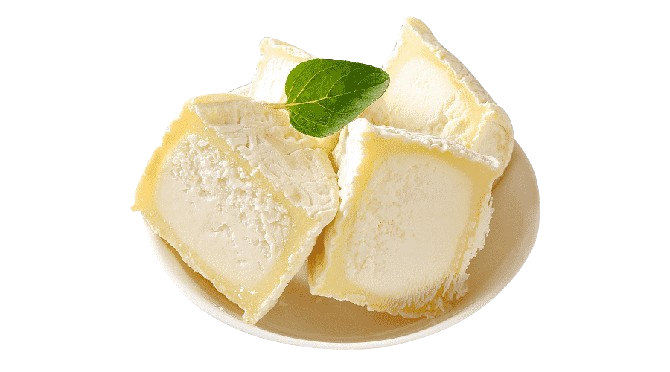

Queijo Brie
Originado na província de Brie, França, no século VIII.
Originado na província de Brie, França, no século VIII.
Viena reconheceu o Brie como um dos queijos mais macios e saborosos da França em 1814.
O Brie se destaca por sua casca macia, resultante da ação de fungos brancos. Sua textura cremosa abriga um interior denso.